F1 Drive
A charity karting Grand Prix for the music industry at F1 Drive London, bringing together Tottenham Hotspur and Live Nation in support of Nordoff and Robbins. We created the naming system and the visual identity, from the event name to the campaign that ran across the city.
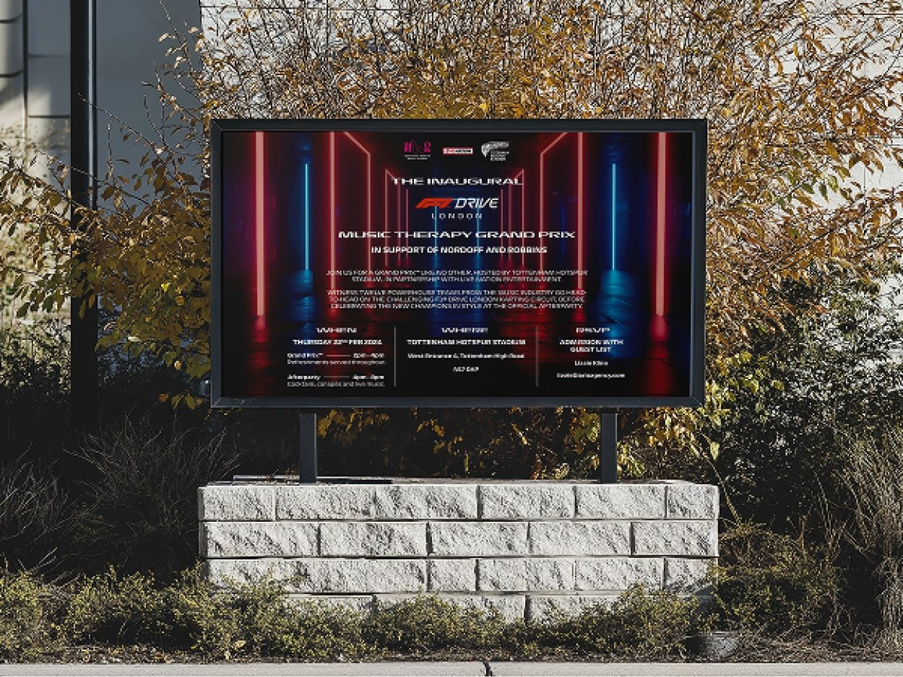
The brief
Name and dress a charity Grand Prix.
F1 Drive London was hosting its first charity karting Grand Prix, a music-industry event in support of Nordoff and Robbins, the UK’s largest music therapy charity, in partnership with Tottenham Hotspur and Live Nation. It needed a name that could carry the occasion and grow into a series, and a visual identity strong enough to fill a billboard and sell out the grid.
The name
An F1 naming system, built to scale.
We started from Formula 1’s own naming logic, a location and a Grand Prix, and turned it into a three-part system: a constant, a partner-led event name, and a year. It gave the inaugural race a name of its own and the organisers a structure that could return and grow, season after season.
Brand and event identification. The event name, interchangeable season to season.
Partnership identification. Credits the partners behind the circuit.
A timestamp, for a returning, yearly championship.
Built to return, year on year.
The structure was designed to scale from a one-off pilot into a named, dated championship, with each season building on the last.
Grand Prix 2025
Each return carries marketing around previous winners and the incentive to come back, turning a single event into a fixture.
Alternatives, same structure.
A set of alternatives kept the system intact while shifting the tone, from a Grand Prix to a Grandstand to a Championship.
The look
From retro homage to a bolder direction.
The first direction was a retro one, a vintage Grand Prix poster reworked for a modern karting event. We explored it widely, in classic illustration, event-information layouts and a London edition, before refining into a bolder, more photographic campaign.
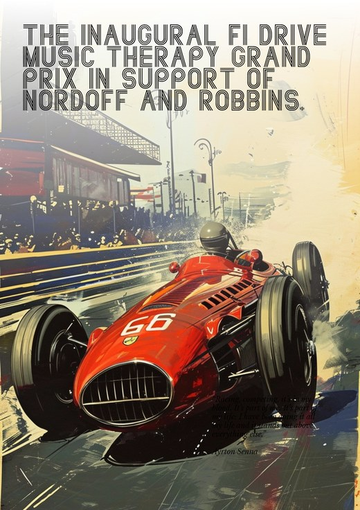
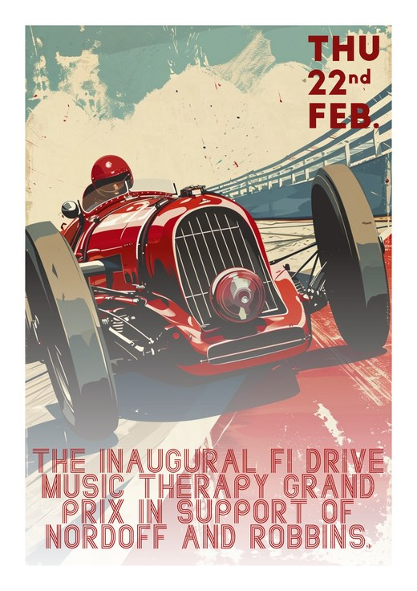
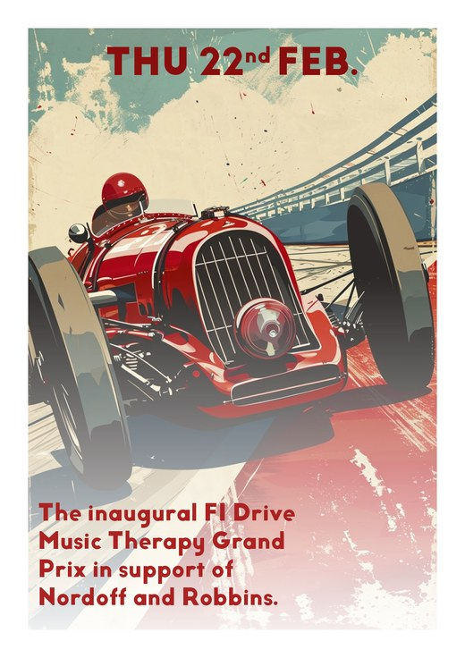
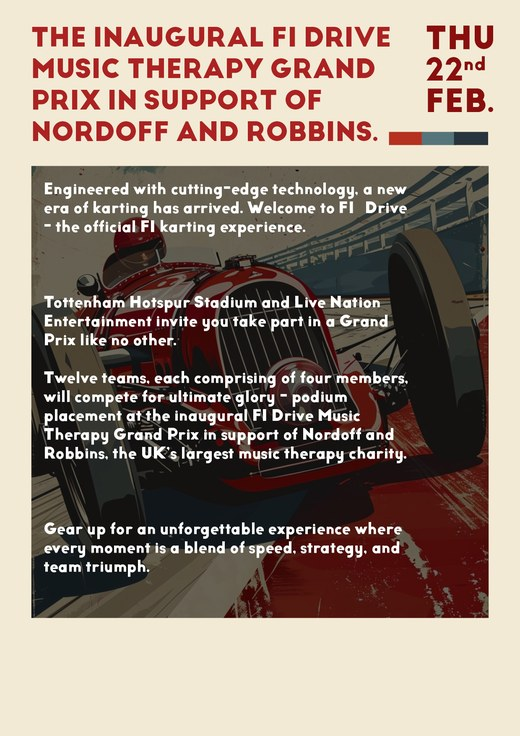
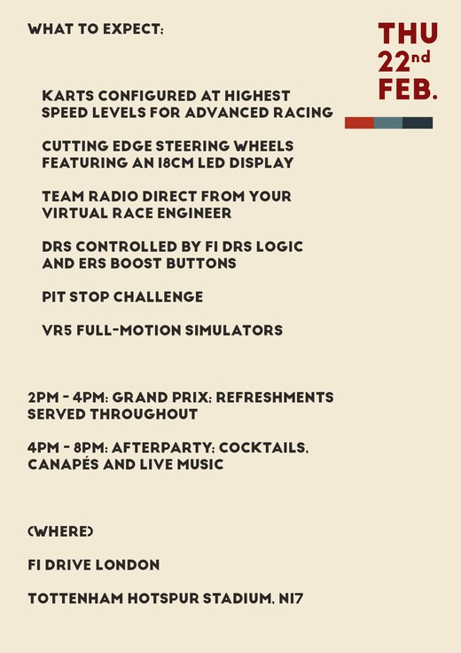
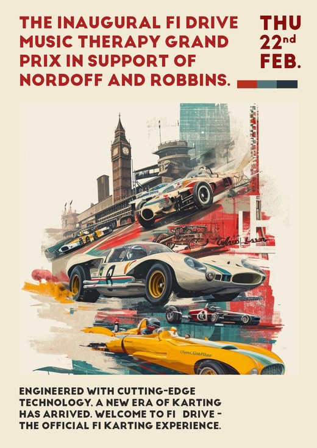
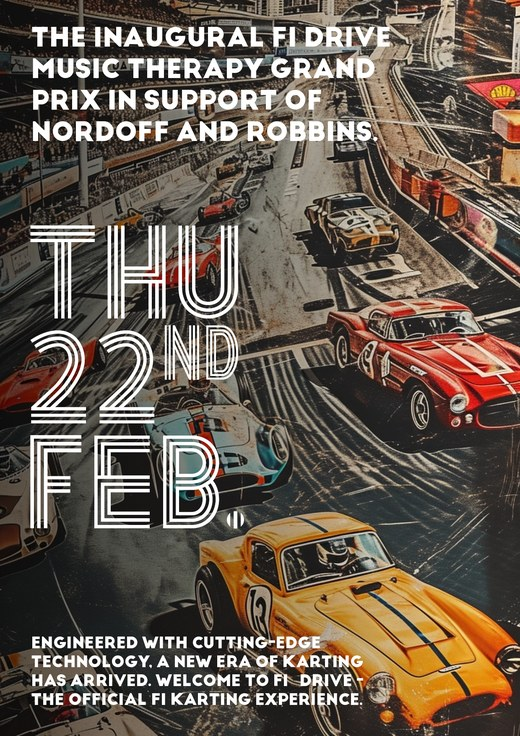
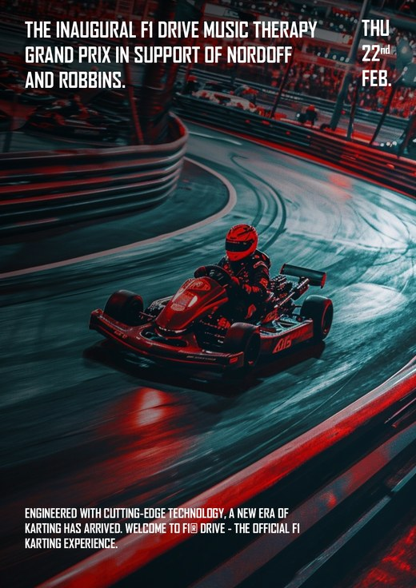
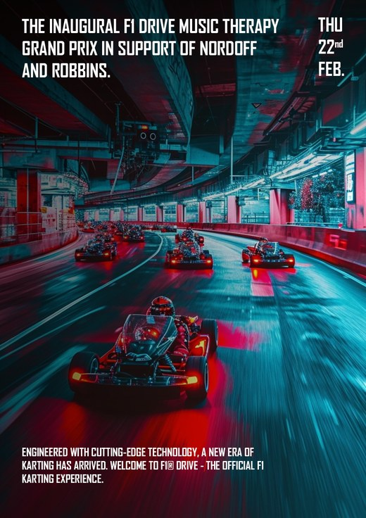
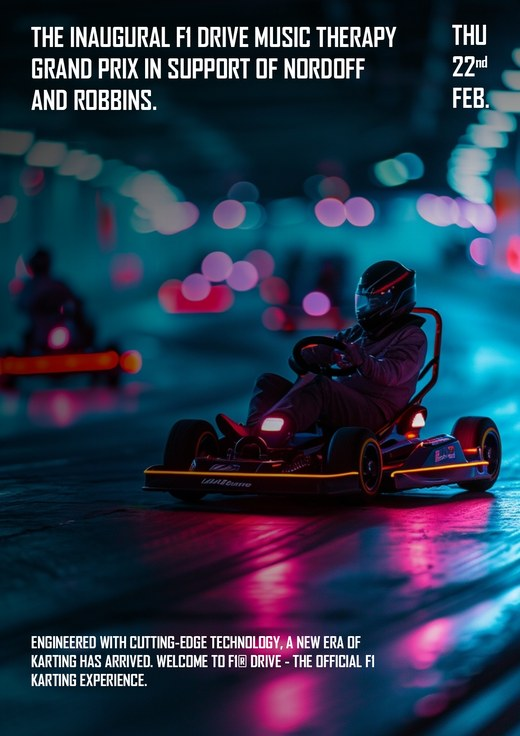
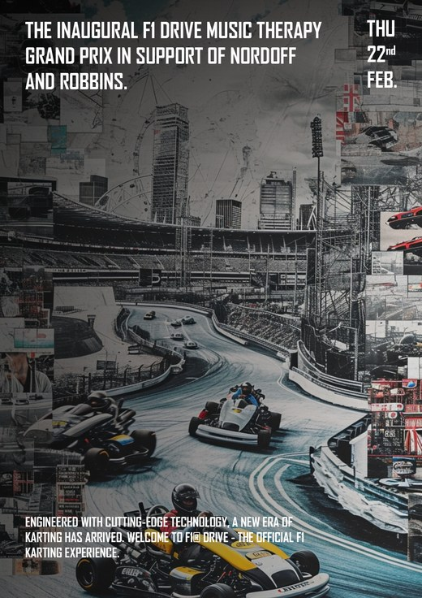
The refined direction.
The campaign that ran led with the driver, the helmet and the neon of the grid, carried into a flexible set of colourways for every placement.
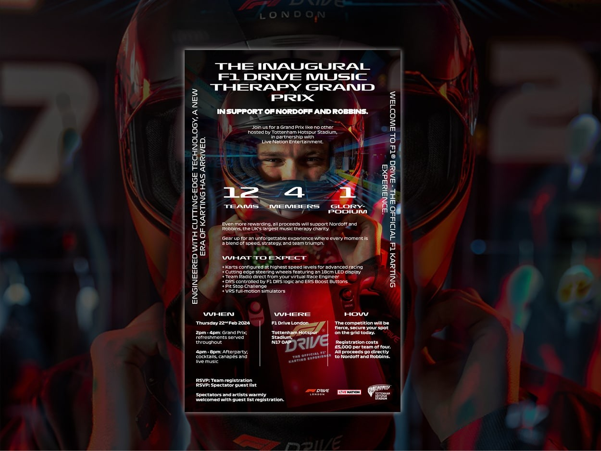
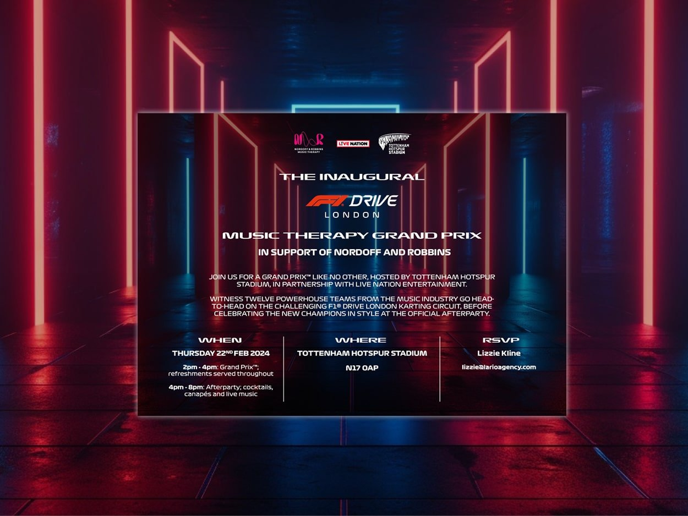
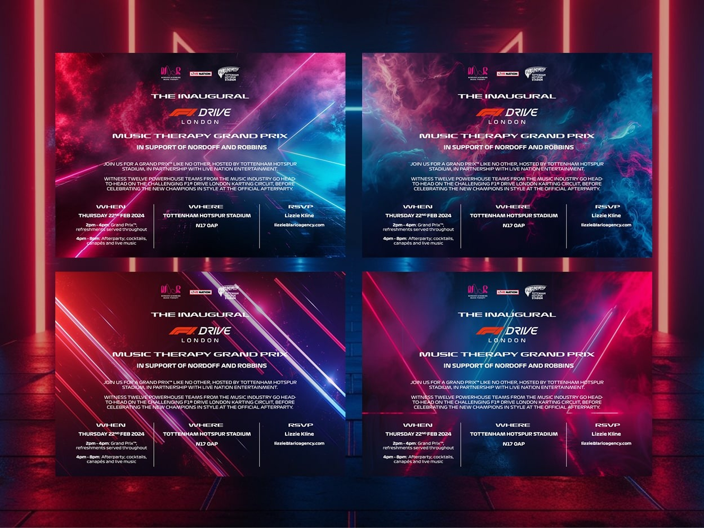
In the world
Across the city, on the day.
The identity rolled out across outdoor sites in the run-up to race day, from digital billboards to bus-stop posters.
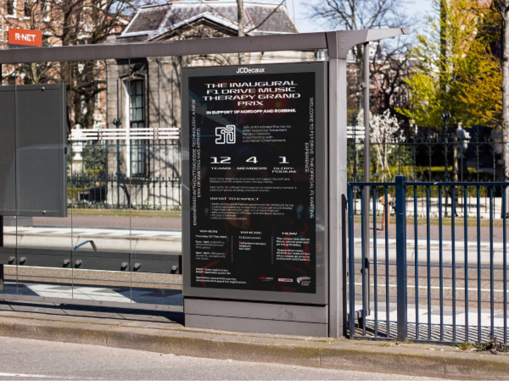
The outcome
A one-off with a series in its DNA.
F1 Drive went into its first charity Grand Prix with a name that works like a Formula 1 title and a campaign that earned its place on a billboard. The system was built so that the next race, and the one after, already have somewhere to go.
Where does your brand sit against the business?
Every engagement starts with the Brand Alignment Diagnostic, a fixed first step that scores your brand against the business and shows what to fix first.